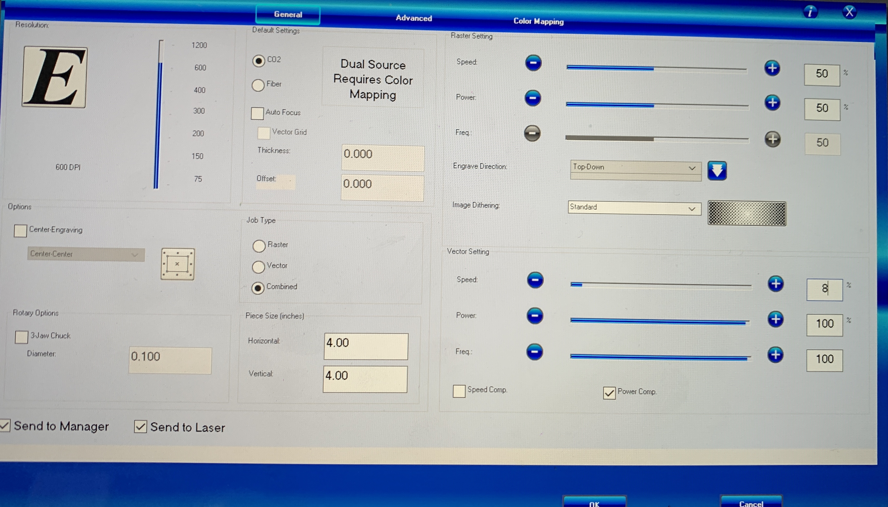

How I completed this assignment:
I first began this assignment by thinking of some ideas. Once I was happy with what I came up with I started my work in Illustrator. I created the piece I wanted to lasercut first. I used the calipers and a ruler to measure the my light piece. Using the diameter I created a circle. I then extruded the height to cover the light plus some space for my laser cut piece. I then capped the cylinder so I could have a bottom and I did a shell to remove the top piece of the cap. I adjusted the thickness so the piece was durable. I exported the file to as an STL file I could open in DigiLab. I then opened the STL file in Digilab and followed the instructions provided in the slide deck on how to set up the file for printing.

Unfortunately I didn't find out till AFTER my piece was done printing that my measurements were slightly off and I did not account for the space that would be taken up by the edges of the cylinder. It took up space on the inside rather than the outside so my light did not fit.
I was able adjusted the measurements to account for the space and reprinted successfully. Once my piece was done printing I was able to use it's measurements to lasercut some cardboard test pieces for the top of the light. Since I was using acrylic for the actual top piece I wanted to ensure it would work. Once I was happy with my test pieces and knew it would work with acrylic I set up the lasercutter for it. Once my piece was done being cut I put it in my holder and bam! We have an arc reactor lamp!
- Speed: 8
- Power: 100%
- Frequency: 100% 
Peer Help: Hannah helped me with getting dimensions of my pieces and helping me with setting up the 3D printer.